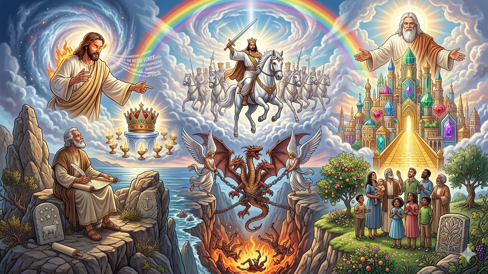
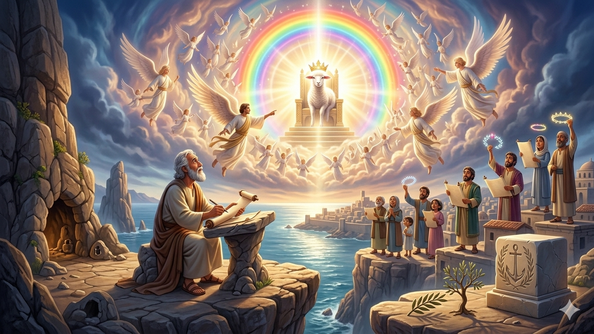
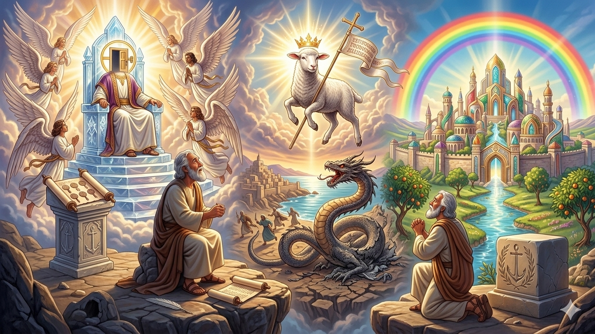
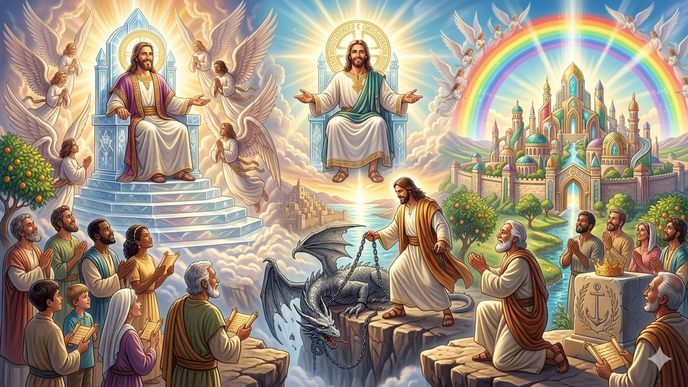
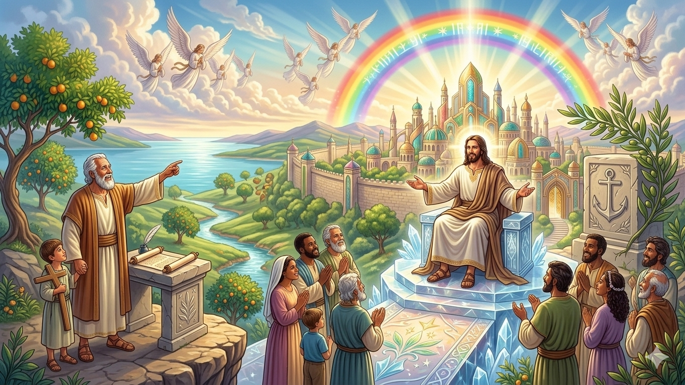
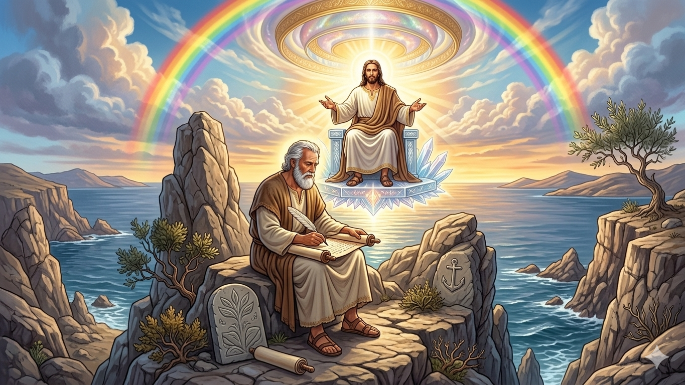

A Revelação da Vitória Final — Um Resumo Visual para Crianças
Na ilha de Patmos João estava,
Quando Jesus glorioso veio mostrar:
"Eu sou o primeiro e o último, o que vive!
Minha vitória é certa, ninguém resiste!"
Com voz de trombeta e olhos de fogo,
Jesus revelou: Ele vence o jogo!
📖 Apocalipse 1:17-18
Dragões, bestas e batalhas sem fim,
Mas não tenha medo, o final é bom assim:
Jesus cavalga em cavalo branco,
Derrota o inimigo com poder santo!
Satanás é lançado no lago de fogo,
E a justiça de Deus brilha em todo lugar logo!
📖 Apocalipse 19:11-16; 20:10
Deus enxugará toda lágrima e dor,
Não haverá mais tristeza, só amor!
A cidade santa desce do céu,
Com ruas de ouro e portões de véu.
Viveremos com Deus para sempre feliz,
Num paraíso perfeito que Ele prometeu e fez!
📖 Apocalipse 21:1-4
"E enxugará dos olhos deles toda lágrima, e a morte não existirá mais; já não haverá luto, nem choro, nem dor, porque as primeiras coisas já passaram."
— Apocalipse 21:4Apocalipse pode parecer assustador, mas termina com a mais bela promessa da Bíblia: um dia, Deus vai apagar toda dor e tristeza! Esse futuro glorioso é garantido para quem crê em Jesus — e vale esperar!

✍️ João:
O apóstolo que escreveu as visões que Deus lhe mostrou enquanto estava na ilha de Patmos.
«Não temas; eu sou o primeiro e o último e o que vive. Estive morto, mas agora estou vivo para todo o sempre.»
— Ap 1:17-18👑 Jesus:
O Cordeiro de Deus, o Rei dos reis e Senhor dos senhores que vence todas as batalhas!
😇 Anjos:
Mensageiros celestiais que anunciam os julgamentos e as boas novas de Deus.
💪 Servos Fiéis:
Aqueles que permanecem firmes em Jesus, mesmo nas dificuldades, e recebem a coroa da vida!
Apocalipse é um livro cheio de visões incríveis que Deus mostrou a João sobre o futuro!
🌟 Visões Celestiais: João vê Jesus glorificado, anjos poderosos e o trono de Deus no céu.
«Eis que estou à porta e bato; se alguém ouvir a minha voz e abrir a porta, entrarei.»
— Ap 3:20⚔️ Batalha do Bem Contra o Mal: O livro mostra a luta entre as forças de Deus e as forças do mal.
🏆 Vitória Final de Jesus: No fim, Jesus vence completamente e derrota o diabo para sempre!
«Eles o venceram pelo sangue do Cordeiro e pela palavra do seu testemunho.»
— Ap 12:11🏰 Novo Céu e Nova Terra: Deus cria um lugar perfeito onde não há mais choro, dor ou morte!


Mesmo quando as coisas parecem difíceis ou assustadoras, Apocalipse nos lembra que Deus tem o controle de tudo. Ele é mais forte que qualquer problema!
O livro nos ensina que, no final da história, o bem sempre vence o mal. Jesus já ganhou a batalha na cruz, e um dia todos verão Sua vitória completa!
«Eu sou o Alfa e o Ômega, o primeiro e o último, o princípio e o fim.»
— Ap 22:13Apocalipse nos dá esperança! Sabemos que Deus tem um plano maravilhoso para o futuro, e isso nos ajuda a viver com coragem e fé hoje!
O propósito de Apocalipse é revelar que Jesus voltará para estabelecer um novo céu e uma nova terra, cheios de paz e alegria!
👑 Jesus Voltará!
O livro promete que Jesus voltará em glória para buscar Seu povo e reinar para sempre!
«Aquele que dá testemunho destas coisas diz: Certamente, venho em breve. Amém! Vem, Senhor Jesus!»
— Ap 22:20🏰 Um Novo Paraíso!
Deus criará um lugar perfeito onde viveremos com Ele eternamente, sem tristeza, dor ou lágrimas!
🌟 Viva com Esperança!
Apocalipse nos ensina a viver hoje com esperança, sabendo que o melhor ainda está por vir!


João escreveu Apocalipse enquanto estava preso na ilha de Patmos — um lugar isolado e rochoso no meio do mar!
Mesmo estando sozinho e longe de casa, João recebeu visões incríveis de Jesus e uma mensagem cheia de esperança para todos nós!
💡 Lição: Mesmo nos momentos mais difíceis, Deus está conosco e pode nos usar para fazer coisas extraordinárias!
🌟 Curiosidade Extra: Apocalipse é o único livro da Bíblia que promete uma bênção especial para quem o lê! (Apocalipse 1:3)
Apocalipse mostra a vitória final de Jesus sobre o mal. Como saber que o bem vence no final muda a forma de você encarar as dificuldades hoje?
Apocalipse 3:20 diz que Jesus está à porta e bate. Isso é um convite pessoal! Você já "abriu a porta" para Jesus entrar na sua vida?
O novo céu e a nova terra em Apocalipse 21 não tem mais dor, morte ou lágrimas. O que você mais quer que desapareça nesse novo mundo?
Leia Apocalipse 21:1-7 — a visão do novo céu e nova terra! Escreva 5 coisas incríveis que esse novo mundo terá.
Escreva: "E enxugará dos olhos deles toda lágrima... as primeiras coisas já passaram. — Apocalipse 21:4" e cole num lugar que te dá esperança.
Esta semana, quando algo difícil acontecer, lembre: "Isso é temporário. A vitória final já está garantida em Jesus!"
© 2025 - Trilho Kids
Desenvolvido com ❤️ para crianças